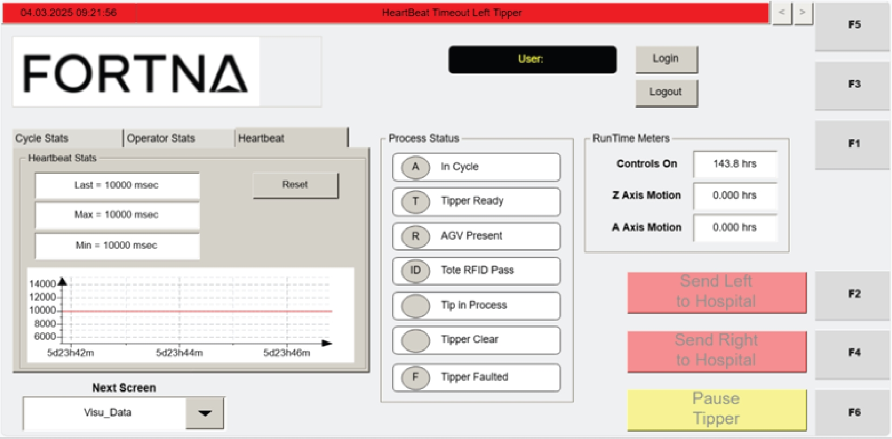

| Procedure ID | proc_reset_heartbeat_statistics_on_the_visu_data_screen_v1 |
|---|---|
| Title | Reset Heartbeat Statistics On The VISU_DATA Screen |
| Procedure Type | operation |
| Primary Role | L1_support |
| Support Safe | Yes |
| Validation Status | needs_sme_review |
| Merge Status | source_finalized |
Use the Heartbeat RESET button on the VISU_DATA screen to reset heartbeat timing data to zero. The source describes the Heartbeat section as showing Last, Max, and Min values in milliseconds and states that the RESET button resets the data to zero.
Use this procedure when heartbeat timing statistics on the VISU_DATA screen need to be cleared to zero using the HMI RESET control.
Responsible role: L1_support
Instruction:
Open the operator station HMI VISU_DATA screen and locate the Heartbeat section that shows heartbeat signal statistics between the tipper and WCS.
Expected result:
The Heartbeat section is visible on the VISU_DATA screen.
Screens / Images:

Stop or Escalate If:
Responsible role: L1_support
Instruction:
Within the Heartbeat section, identify the RESET button associated with the displayed heartbeat statistics.
Expected result:
The RESET button is identified in the Heartbeat section.
Screens / Images:
Stop or Escalate If:
Responsible role: L1_support
Instruction:
Review the displayed Last, Max, and Min heartbeat values in milliseconds before performing the reset.
Expected result:
The current Last, Max, and Min heartbeat values are reviewed before reset.
Screens / Images:
Stop or Escalate If:
Responsible role: L1_support
Instruction:
Press the RESET button in the Heartbeat section to reset the displayed heartbeat data to zero.
Expected result:
The heartbeat statistics are reset by the HMI.
Screens / Images:
Stop or Escalate If:
Responsible role: L1_support
Instruction:
Verify that the Heartbeat values on the VISU_DATA screen display zero after the reset.
Expected result:
The Heartbeat values display zero.
Screens / Images:
Stop or Escalate If: